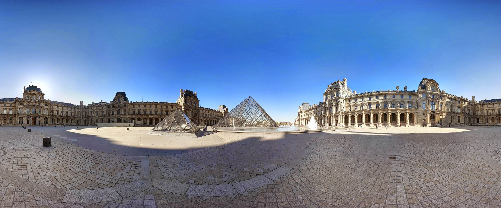
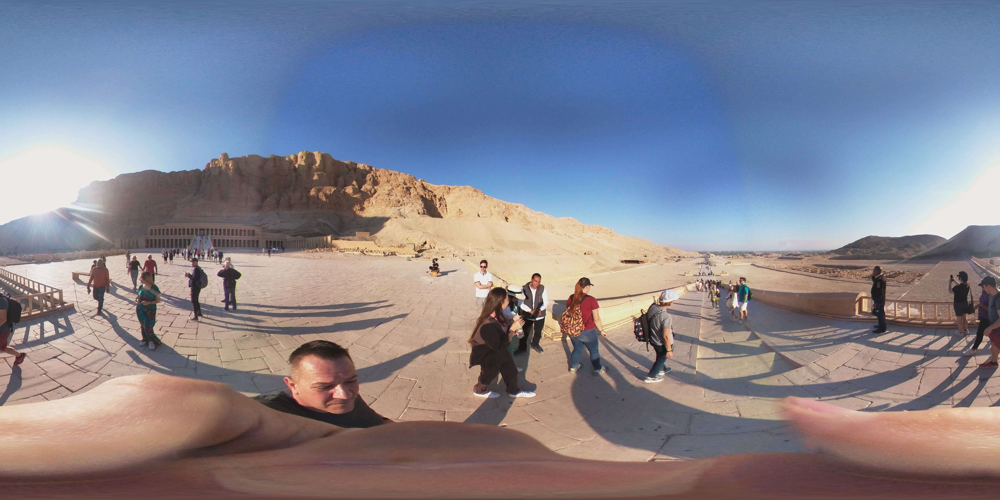

<!DOCTYPE html>
<html lang="en">

<head>
  <meta charset="UTF-8">
  <meta http-equiv="X-UA-Compatible" content="IE=edge">
  <meta name="viewport" content="width=device-width, initial-scale=1.0">
  <script src="https://aframe.io/releases/1.2.0/aframe.min.js"></script>
  <script>
    AFRAME.registerComponent('camera-move', {
      schema: {
        point: { type: 'string' },
      },

      init: function () {
        var data = this.data;
        var el = this.el;
        var cursor = document.querySelector('[raycaster]');
        var room = document.querySelector('#room');
        var sky = document.querySelector('#sky');
        var camera = document.querySelector('#myCamera');
        var exit = document.querySelector('#exit');
        var images = document.querySelectorAll('.wall-image');

        const handleAnimationComplete = async function () {
          if (data.point === '#pointStart') {
            camera.setAttribute('wasd-controls', '');
            camera.setAttribute('position', '0 3 0');
            images.forEach(item => item.setAttribute('scale', '1 1 1'));
            room.setAttribute('visible', true);
            exit.setAttribute('visible', false);
            cursor.removeEventListener('animationcomplete__up', handleAnimationComplete);
          } else {
            await sky.setAttribute('src', data.point);
            images.forEach(item => item.setAttribute('scale', '0 0 0'));
            camera.removeAttribute('wasd-controls');
            camera.setAttribute('position', '0 0 0');
            room.setAttribute('visible', false);
            exit.setAttribute('visible', true);
            cursor.removeEventListener('animationcomplete__up', handleAnimationComplete);
          }
        }

        el.addEventListener('mouseenter', function () {
          cursor.removeAttribute('animation__down');
          cursor.setAttribute('animation__up', {
            property: 'scale',
            to: '1.5 1.5 1.5',
            dur: 1000
          });
          cursor.addEventListener('animationcomplete__up', handleAnimationComplete);
        });

        el.addEventListener('mouseleave', function () {
          cursor.removeAttribute('animation__up');
          cursor.setAttribute('animation__down', {
            property: 'scale',
            to: '1 1 1',
            dur: 300
          });
        });
      }
    });
  </script>
  <title>A-frame</title>
</head>

<body>

</body>


<a-scene inspector="" keyboard-shortcuts="" screenshot="" vr-mode-ui="" device-orientation-permission-ui="">
  <a-assets>
    
    
    

    

    
    
    

    
    
    

    
    
    

    
    
    

  </a-assets>

  <a-entity id="room" visible="true">

    <!-- Свет -->
    <a-light type="directional" color="#ffffff" intensity="0.6" position="11.06237 8.95739 13.48937" light=""></a-light>
    <a-light type="directional" color="#ffffff" intensity="0.6" position="12.58804 12.6857 -9.52882" light=""></a-light>
    <a-light type="directional" color="#ffffff" intensity="0.6" position="-12.6489 13.87215 -9.20653" light="">
    </a-light>
    <a-light type="directional" color="#ffffff" intensity="0.6" position="-12.17239 13.83704 11.09352" light="">
    </a-light>

    <!-- Стены -->
    <a-plane position="-15 7.5 0" rotation="180 -90 0" width="4" height="4" color="#fff"
      geometry="width: 30; height: 15" material="src: #texture-wall" static-body>
    </a-plane>
    <a-plane position="15 7.5 0.0135" rotation="-180 90 0" width="4" height="4" color="#fff"
      geometry="width: 30; height: 15" material="src: #texture-wall">
    </a-plane>
    <a-plane position="0 7.5 15" rotation="180 0 0" width="4" height="4" color="#fff" geometry="width: 30; height: 15"
      material="src: #texture-wall" static-body>
    </a-plane>
    <a-plane position="0 7.5 -15" rotation="180 180 0" width="4" height="4" color="#fff"
      geometry="width: 30; height: 15" material="src: #texture-wall" static-body>
    </a-plane>

    <!-- Пол -->
    <a-plane material="src: #texture-floor" position="0 0 0" rotation="-90 0 0" width="4" height="4" color="#fff"
      geometry="width: 30; height: 30" static-body>
    </a-plane>
    <!-- Потолок -->
    <a-plane material="src: #texture-ceiling" position="0 15 0" rotation="90 0 0" width="4" height="4" color="#fff"
      geometry="width: 30; height: 30" static-body>
    </a-plane>

    <!-- Надписи на стенах -->
    <a-text value="France" position="0 11 -14.5" align="center" width="6" color="#362640"
      font="https://cdn.aframe.io/fonts/mozillavr.fnt" text="" scale="15 15 1">
    </a-text>

    <a-text value="Eiffel Tower" position="-9 5 -14.5" align="center" width="6" color="#362640"
      font="https://cdn.aframe.io/fonts/mozillavr.fnt" text="" scale="3 3 1">
    </a-text>
    <a-text value="Louvre" position="0 5 -14.5" align="center" width="6" color="#362640"
      font="https://cdn.aframe.io/fonts/mozillavr.fnt" text="" scale="3 3 1">
    </a-text>
    <a-text value="Notre-Dame de Paris" position="9 5 -14.5" align="center" width="6" color="#362640"
      font="https://cdn.aframe.io/fonts/mozillavr.fnt" text="" scale="3 3 1">
    </a-text>

    <a-text value="Egypt" position="0 11 14.5" align="center" width="6" color="#362640"
      font="https://cdn.aframe.io/fonts/mozillavr.fnt" text="" scale="15 15 1" rotation="0 180 0">
    </a-text>

    <a-text value="Abu Simbel" position="-9 5 14.5" align="center" width="6" color="#362640"
      font="https://cdn.aframe.io/fonts/mozillavr.fnt" text="" scale="3 3 1" rotation="0 180 0">
    </a-text>
    <a-text value="Great Sphinx of Giza" position="0 5 14.5" align="center" width="6" color="#362640"
      font="https://cdn.aframe.io/fonts/mozillavr.fnt" text="" scale="3 3 1" rotation="0 180 0">
    </a-text>
    <a-text value="The Valley of the Kings" position="9 5 14.5" align="center" width="6" color="#362640"
      font="https://cdn.aframe.io/fonts/mozillavr.fnt" text="" scale="3 3 1" rotation="0 180 0">
    </a-text>

    <a-text value="Russia" position="-14.9 11 0" align="center" width="6" color="#362640"
      font="https://cdn.aframe.io/fonts/mozillavr.fnt" text="" scale="15 15 1" rotation="0 90 0">
    </a-text>

    <a-text value="Grand Theatre" position="-14.9 5 9" align="center" width="6" color="#362640"
      font="https://cdn.aframe.io/fonts/mozillavr.fnt" text="" scale="3 3 1" rotation="0 90 0">
    </a-text>
    <a-text value="Baikal" position="-14.9 5 0" align="center" width="6" color="#362640"
      font="https://cdn.aframe.io/fonts/mozillavr.fnt" text="" scale="3 3 1" rotation="0 90 0">
    </a-text>
    <a-text value="St Basil's Church" position="-14.9 5 -9" align="center" width="6" color="#362640"
      font="https://cdn.aframe.io/fonts/mozillavr.fnt" text="" scale="3 3 1" rotation="0 90 0">
    </a-text>

    <a-text value="United States" position="14.9 11 0" align="center" width="6" color="#362640"
      font="https://cdn.aframe.io/fonts/mozillavr.fnt" text="" scale="15 15 1" rotation="0 -90 0">
    </a-text>

    <a-text value="Rushmore mountain" position="14.9 5 9" align="center" width="6" color="#362640"
      font="https://cdn.aframe.io/fonts/mozillavr.fnt" text="" scale="3 3 1" rotation="0 -90 0">
    </a-text>
    <a-text value="Statue of Liberty" position="14.9 5 0" align="center" width="6" color="#362640"
      font="https://cdn.aframe.io/fonts/mozillavr.fnt" text="" scale="3 3 1" rotation="0 -90 0">
    </a-text>
    <a-text value="Golden Gate" position="14.9 5 -9" align="center" width="6" color="#362640"
      font="https://cdn.aframe.io/fonts/mozillavr.fnt" text="" scale="3 3 1" rotation="0 -90 0">
    </a-text>

    <!-- Изображения на стене 1 -->
    <a-image class="wall-image" src="./img/eifell.webp" position="-9 2.5 -14.9" rotation="" width="3.5" height="2.5"
      material="" geometry="width: 2.46; height: 3.04" scale="" camera-move="point: #pointEiffel;">
    </a-image>

    <a-image class="wall-image" src="./img/louvre.jpg" position="0 2.5 -14.9" rotation="" width="3.5" height="2.5"
      material="" geometry="width: 2.46; height: 3.04" scale="" camera-move="point: #pointLouvre;">
    </a-image>

    <a-image class="wall-image" src="./img/notre-dame.webp" position="9 2.5 -14.9" rotation="" width="3.5" height="2.5"
      material="" geometry="width: 2.46; height: 3.04" scale="" camera-move="point: #pointNotreDame;">
    </a-image>

    <!-- Изображения на стене 2 -->
    <a-image class="wall-image" src="./img/abo-simbel.jpg" position="-9 2.5 14.9" rotation="0 180 0" width="3.5"
      height="2.5" material="" geometry="width: 2.46; height: 3.04" scale="" camera-move="point: #pointAboSimbel;">
    </a-image>

    <a-image class="wall-image" src="./img/sphinks.jpg" position="0 2.5 14.9" rotation="0 180 0" width="3.5"
      height="2.5" material="" geometry="width: 2.46; height: 3.04" scale="" camera-move="point: #pointSphinx;">
    </a-image>

    <a-image class="wall-image" src="./img/valley.jpg" position="9 2.5 14.9" rotation="0 180 0" width="3.5" height="2.5"
      material="" geometry="width: 2.46; height: 3.04" scale="" camera-move="point: #pointValley;">
    </a-image>

    <!-- Изображения на стене 3 -->
    <a-image class="wall-image" src="./img/sobor.jpg" position="-14.9 2.5 -9" rotation="0 90 0" width="3.5" height="2.5"
      material="" geometry="width: 2.46; height: 3.04" scale="" camera-move="point: #pointSobor;">
    </a-image>

    <a-image class="wall-image" src="./img/baikal.jpg" position="-14.9 2.5 0" rotation="0 90 0" width="3.5" height="2.5"
      material="" geometry="width: 2.46; height: 3.04" scale="" camera-move="point: #pointBaikal;">
    </a-image>

    <a-image class="wall-image" src="./img/theatre.jpg" position="-14.9 2.5 9" rotation="0 90 0" width="3.5"
      height="2.5" material="" geometry="width: 2.46; height: 3.04" scale="" camera-move="point: #pointTheatre;">
    </a-image>

    <!-- Изображения на стене 4 -->
    <a-image class="wall-image" src="./img/goldenGate.jpg" position="14.9 2.5 -9" rotation="0 -90 0" width="3.5"
      height="2.5" material="" geometry="width: 2.46; height: 3.04" scale="" camera-move="point: #pointGoldenGate;">
    </a-image>

    <a-image class="wall-image" src="./img/statue.jpg" position="14.9 2.5 0" rotation="0 -90 0" width="3.5" height="2.5"
      material="" geometry="width: 2.46; height: 3.04" scale="" camera-move="point: #pointStatue;">
    </a-image>

    <a-image class="wall-image" src="./img/rushmore.jpg" position="14.9 2.5 9" rotation="0 -90 0" width="3.5"
      height="2.5" material="" geometry="width: 2.46; height: 3.04" scale="" camera-move="point: #pointRushmore;">
    </a-image>

  </a-entity>

  <a-image id="exit" src="./img/exit.png" position="5 0 5" rotation="0 45 0" width="1" height="1"
    camera-move="point: #pointStart;" visible="false">
  </a-image>

  <a-camera id="myCamera" look-controls wasd-controls position="2 3 0">
    <a-entity cursor="fuse: true; fuseTimeout: 500" position="0 0 -1"
      geometry="primitive: ring; radiusInner: 0.015; radiusOuter: 0.025" material="color: red; shader: flat" raycaster>
    </a-entity>
  </a-camera>

  <a-sky id="sky" src="#pointStart"></a-sky>


  <div class="a-loader-title" style="display: none;">A-frame</div>
</a-scene>


</html>